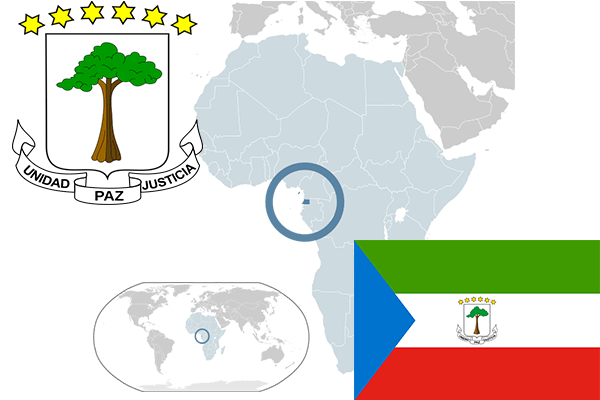

To`liq nomi: Ekvator Gvineyasi Respublikasi
Region: Markaziy Afrika
Qonunchilik shakli: Respublika
Mustaqillik kuni : 12 oktabr 1968 yil (Ispaniyadan)
Poytaxt: Malabo
Maydoni: 28 051 km² (dunyoda 141 -o`rinda )
Chegaradosh davlatlari: Kamerun, Gabon
Aholisi: 740 743 (dunyoda 165 -o`rinda, 2013 -yil roʻyxat)
Aholi zichligi: 26,41 /km²
Aholining o`rtacha yoshi: 49,55 yil ( 51,00 ayollar, 48,1 erkaklar)
Rasmiy tili: Ispan,fransuz va portugal tili
Dini: 85% Katolik qolgan qismi mahalliy dinlar
Pul birligi: Afrika franki
Telefon prefiksi: +240
Internet domen: .gq
Xalqaro tashkilotlarga a`zoligi: BMT (1968 – yildan),
Dengiz va okeanlarga chiqishi: Gvineya qo`ltig`i
YIM: Butun: $ 15,5 mlrd, Jon boshiga: $ 11 056 (2015 - yil roʻyxati)
Yirik shaharlari: Malabo, Bata